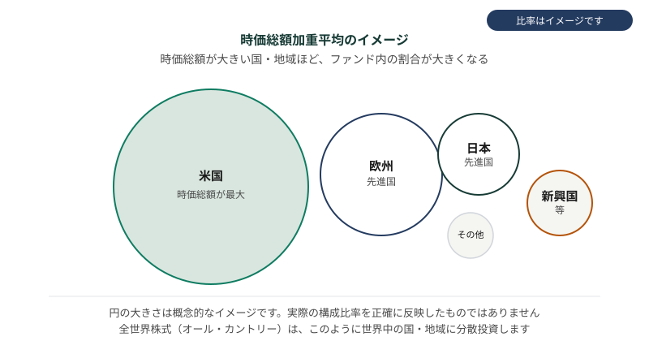

オルカンとは
このページで学ぶこと
- オルカンの愛称の由来
- eMAXIS Slim 全世界株式（オール・カントリー）の特徴
- ベンチマーク MSCI ACWI の仕組み
- 時価総額加重平均と米国比率
- 元本保証がないこととリスク
「オルカン」の愛称の由来
「オルカン」は、「オール・カントリー（All Country）」の略称です。特定のファンドの愛称として広く使われており、一般的には「eMAXIS Slim 全世界株式（オール・カントリー）」を指します。
「オール・カントリー」という名前のとおり、全世界の株式に投資するファンドです。ただし、すべての国に均等に投資するわけではなく、時価総額加重平均という方法で、各国の株式市場の規模に応じた比率で投資します。
「オルカン」はファンド固有の愛称
「オルカン」という言葉自体は、特定のファンド（eMAXIS Slim 全世界株式）の愛称です。全世界株式に投資するファンド全般を指す言葉ではありません。
eMAXIS Slim 全世界株式（オール・カントリー）
eMAXIS Slim 全世界株式（オール・カントリー）は、三菱UFJアセットマネジメントが運用する投資信託です。全世界の株式市場の値動きに連動することを目指して運用されるインデックスファンドです。
このファンドの特徴は以下のとおりです。
- 全世界の株式に分散投資できる: 1つのファンドで先進国・新興国を含む全世界の株式に投資できる
- インデックスファンド: MSCI ACWIという指数に連動することを目指す
- 積立投資に向いている: 毎月一定額を積み立てる投資方法と相性が良い
ベンチマーク MSCI ACWI
MSCI ACWI（All Country World Index）は、MSCIが算出する全世界株式指数です。先進国と新興国の株式市場の値動きを総合的に示す指数で、配当込み・円換算で算出されます。
MSCI ACWIの特徴は以下のとおりです。
- 全世界をカバー: 先進国・新興国を含む全世界の株式市場を対象とする
- 配当込み: 配当を再投資したものとして算出される
- 円換算: 日本円に換算して算出されるため、為替の影響も反映される
時価総額加重平均と米国比率
MSCI ACWIは、時価総額加重平均という方法で算出されます。時価総額加重平均とは、時価総額が大きい企業ほど指数における比率が高くなる計算方法です。
世界の株式市場では、米国の株式市場の時価総額が最も大きいため、MSCI ACWIにおける米国の比率は高くなります。つまり、「全世界に分散投資する」といっても、実際には米国への投資比率が高い点に注意が必要です。
時価総額加重平均のイメージ
時価総額加重平均では、企業の規模（時価総額）に応じて指数における比率が決まります。米国の株式市場は世界最大の規模を持つため、MSCI ACWIにおける米国の比率は高くなります。「全世界に均等に分散している」わけではありません。
図：時価総額加重平均のイメージ

時価総額が大きい国・地域ほどファンド内の割合が大きくなります（円の大きさはイメージであり、実際の構成比率を正確に反映したものではありません）
元本保証がないこととリスク
オルカンを含むすべての投資信託には、元本保証がありません。投資した金額が減る（元本割れする）リスクがあります。
オルカンの主なリスクは以下のとおりです。
- 価格変動リスク: 全世界の株式市場の値動きにより、基準価額が変動する
- 為替リスク: 円換算で算出されるため、為替の変動が基準価額に影響する
- カントリーリスク: 各国の政治・経済情勢の変化が影響する
元本保証はありません
オルカンは預貯金とは異なり、元本保証がありません。投資した金額が減る可能性があります。投資判断は、リスクを理解したうえでご自身の責任で行ってください。
よくある誤解
オルカンを含むすべての投資信託には元本保証がありません。預貯金とは異なり、投資した金額が減るリスクがあります。
オルカンは時価総額加重平均で投資するため、各国への投資比率は均等ではありません。米国の株式市場の時価総額が最も大きいため、米国の比率が高くなります。
オルカンは市場平均並みのリターンを目指すファンドですが、市場が下がれば価値も下がります。必ず儲かるわけではありません。
理解度チェック
Q1. 「オルカン」の由来として正しいものはどれですか?
Q2. MSCI ACWIとは何ですか?
Q3. 時価総額加重平均の特徴として正しいものはどれですか?